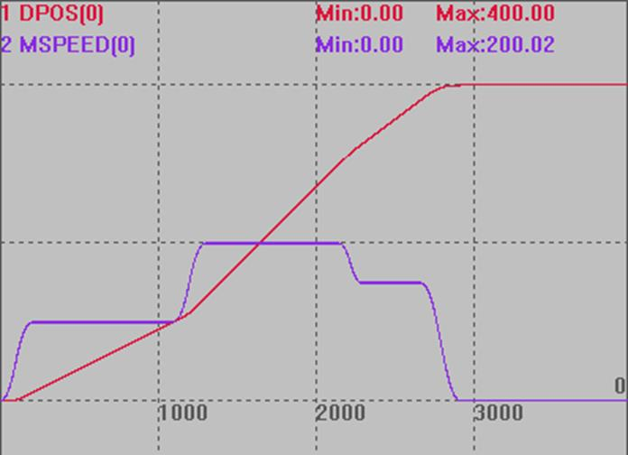
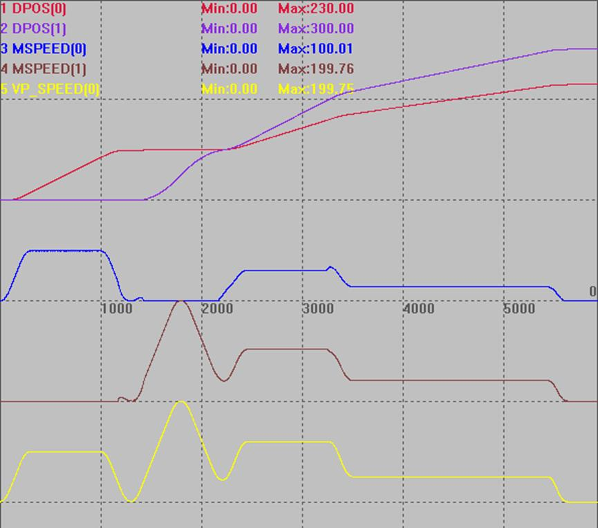

|
类型 |
特殊运动指令 |
|
描述 |
BASE轴运动缓冲修改参数。 这个指令LOAD执行时不做任何运动，只修改参数。此指令的MTYPE与MOVE_OP一致。 注意事项： 1.MOVE_PARA仅适用于修改全局参数，而不应用于修改那些会被带入运动缓冲区的参数，例如FORCE_SPEED、CORNER_MODE、INTPFACTOR和CORNER_ACC等。 在分离运动模式下，ACCEL和SPEED也会被带入缓冲，因此不能使用MOVE_PARA修改。 2.为了确保参数值能够正确地被带入运动缓冲区，必须在MOVE指令被填入运动缓冲区之前，通过直接调用参数来进行修改。如果在MOVE指令之后尝试修改这些参数，可能会导致参数值的随机性，从而影响运动效果的确定性。 |
|
语法 |
MOVE_PARA(paraname, index, value) paraname：参数名, 必须是?*set里面的非只读参数 index：参数编号 value：参数值 |
|
适用控制器 |
20170503以上固件 |
|
例子 |
例一：修改SPEED BASE(0) '选择轴0 ATYPE=1 SPEED=100 PRINT SPEED '打印结果100 MOVE_PARA(speed ,0,200) '修改轴0的SPEED参数值为200 DELAY(1000) PRINT SPEED '打印结果200
例二：单轴变速 BASE(0) '选择轴0 UNITS=1000 ATYPE=1 SPEED=100 ACCEL =1000 DECEL =1000 SRAMP =100 DPOS = 0 MERGE=ON TRIGGER
MOVE(100) MOVE_PARA(SPEED,0,200) MOVE(200) MOVE_PARA(SPEED,0,150) MOVE(100) END
垂直刻度均为200 
例三：多轴变速 RAPIDSTOP(2) WAIT IDLE(0) WAIT IDLE(0)
BASE(0,1) DPOS=0,0 UNITS=100,100 SPEED=100,100 '设置速度 ACCEL=500,500 '设置加速度 DECEL=500,500 '设置减速度 SRAMP=100,100 'S曲线
MERGE=ON '开启连续插补 CORNER_MODE=2+8+32 '启动拐角减速 DECEL_ANGLE = 15 * (PI/180) '设置开始减速角度 STOP_ANGLE = 45 * (PI/180) '设置结束减速角度 ZSMOOTH=2 FORCE_SPEED=100 '等比减速时起作用 TRIGGER '自动触发示波器
MOVE(100,0)
MOVE_PARA(SPEED,0,200) MOVE(0,100) '运动角度大于45°，完全减速
MOVE_PARA(SPEED,0,120) MOVE(60,100) '运动角度30.96°处于15°~45°，等比减速
MOVE_PARA(SPEED,0,50) MOVE(70,100) '运动角度4.03°小于15°，不减速 END
垂直刻度均为200  |